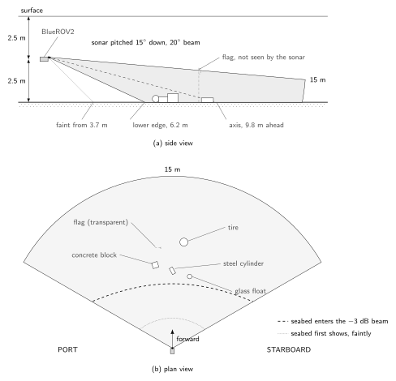
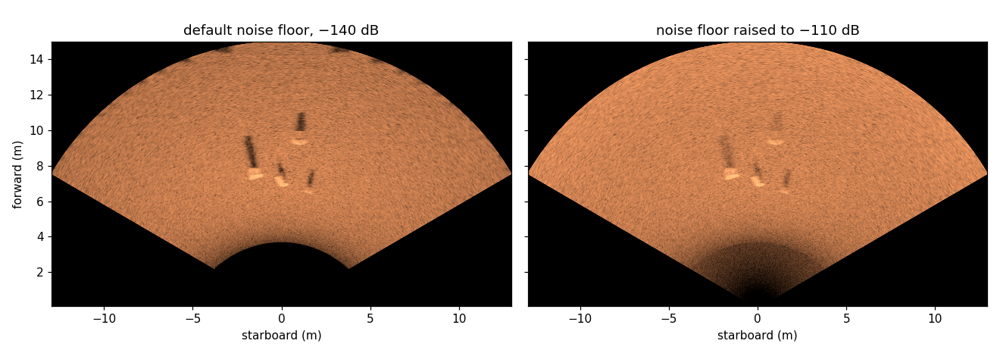
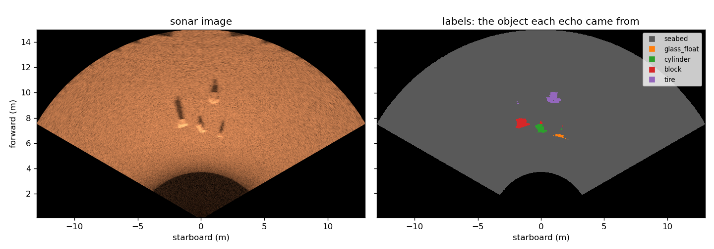

Sonar features: acoustic properties and truth labels
The simulated sonar offers two things that field trials cannot, both valuable for developing and evaluating perception algorithms that should be robust to changes in acoustic properties:
you set how every surface echoes and how hard the image is to read, from easy to difficult to impossible, and
for every echo you can know which object it came from (truth labels).
This page shows both on the imaging sonar world: how each is set, then the example we ran. The parameters, with a sense of scale for each, are in the design.

The example scene: a BlueROV2 with a forward imaging sonar over a sandy seabed, with a glass float, a steel cylinder, a concrete block and a tire ahead of it, and a flag the sonar must not see.
Acoustic properties
Every surface echoes; how strongly is set in SDF. Nothing has to be marked for the sonar to see it, so mark only the objects a scene depends on. The example world marks its targets and the flag this way; the labels figure below shows the result.
Mark a surface
<visual name="glass" gz:acoustic_lambert="-30" gz:acoustic_specular="-3"
gz:acoustic_specular_width="0.07">
<geometry><sphere><radius>0.2</radius></sphere></geometry>
</visual>
Lambert strength (dB) is how much a rough surface scatters back; the specular terms (the square of the reflection coefficient in dB, 0 for a perfect reflector, and the width in radians) add a glint seen only head on, as glass gives; a wider glint is seen over more angles but is dimmer. The same attributes on a <model> apply to all its visuals.
Hide a surface
<model name="flag" gz:acoustic_transparent="true">
...
</model>
For things that are there only for the cameras: the sonar sees through them.
Name the seabed
<plugin filename="gz-maritime-sonar-system" name="gz::sim::maritime::Sonar">
<seabed>
<model>seabed</model>
<lambert>-27</lambert>
</seabed>
<default><lambert>-20</lambert></default>
</plugin>
Terrain often comes from models you do not edit, so its values are set in the world; <default> covers anything unmarked.
Tune the image
A few of the sonar’s own parameters make its image easier or harder to work with. They are keys in the sonar: entry of the sonar part in the vehicle config (Add a sonar); for the example, a copy of bluerov2_sonar.yaml with these added, passed to the launch as config_file:
sonar: {range_max: 15, samples: 768, labels: true,
noise_floor: -110, # received noise, dB; -140 by default
gain: 52, # fixed by default; auto sets it from each frame
speckle: true} # false removes the grain
Parameter |
Effect |
Easier |
Harder |
|---|---|---|---|
|
Noise at the receiver, dB; it rises with range in the image, as the time-varied gain does |
−150 |
−110 |
|
A fixed gain in dB (52 by default), or |
the default |
a fixed gain too low or too high, or |
|
The grain of a real sonar image |
|
|
|
The range window, m |
close to the targets |
much longer |

The example: ping 100 of the imaging sonar world, at the default noise floor and with the noise floor raised. The noise fills the shadows and, more faintly because it rises with range, the empty water close in, and the whole image loses contrast; the brightest returns still stand out, the shadows that tell a detector an object’s height are mostly gone.
Repeatable randomness: the seed
Speckle and noise make every ping different, as on a real sonar, but they are drawn from a seeded random generator: with the same seed, and the vehicle moving the same way, every ping is the same bytes in every run. A different seed, set as <seed> in the world’s sonar system, gives a different run that is just as repeatable. The randomness is fixed by the seed; what the sonar sees still depends on where the vehicle is, so a whole run repeats exactly only when the vehicle’s motion does.
That makes the noise something you control rather than something that happens to you:
Training data. Render the same scene under many seeds to get many independent realizations of speckle and noise over the same geometry, with the same truth labels, so a detector learns the objects rather than one noise pattern. Keep some seeds for validation and testing only, so the test set differs from training in its noise as well as its scenes, and rerun any one seed to reproduce a case the model got wrong.
Scoring a virtual competition. Fix one seed per scenario and every team’s vehicle faces the same noise, so differences in score come from the teams, not from luck; publish practice seeds and keep the scoring seeds private, and rerun a seed to audit a result.
Debugging. A seed and a ping number pin down one image exactly, so a bug report can point at it.
In the example, ping 400 (40 s in) from two separate launches of the imaging sonar world was identical, byte for byte.
Truth labels
For every ping, the sonar can publish which object each beam and sample’s echo came from, at almost no extra cost, since the simulation already knows what every ray hit. Use these ground-truth labels to train and score detectors. A real sonar cannot know this, so the labels are on their own topic, never in the sensor data.
<gz:sonar>
<labels>true</labels>
</gz:sonar>
With that set, the sensor publishes <topic>/labels beside its image; in a vehicle config it is labels: true in the sonar’s sonar: entry, as bluerov2_sonar.yaml has. capture_sonar.py --labels saves a ping with its labels: the 8-bit frame (_u8.npy), the labels (_labels.npy, one id per beam and sample, 0 for nothing) and a .json with the ranges, the beam angles and the name of each id. draw_ping.py draws each saved ping’s fan and, beside it, its labels, every beam and sample colored by the object that sent the most echo energy into it.

The example: one ping of the imaging sonar world, its image beside its labels. The seabed and the four marked targets each have a label, lined up with their bright returns; the flag, marked transparent, has none, because the sonar never sees it.
A label marks where the echo energy came from, not only where the object is: with an unshaded array (sidelobe_level −13), a strong target’s sidelobe arc spreads across the fan and carries that target’s label.